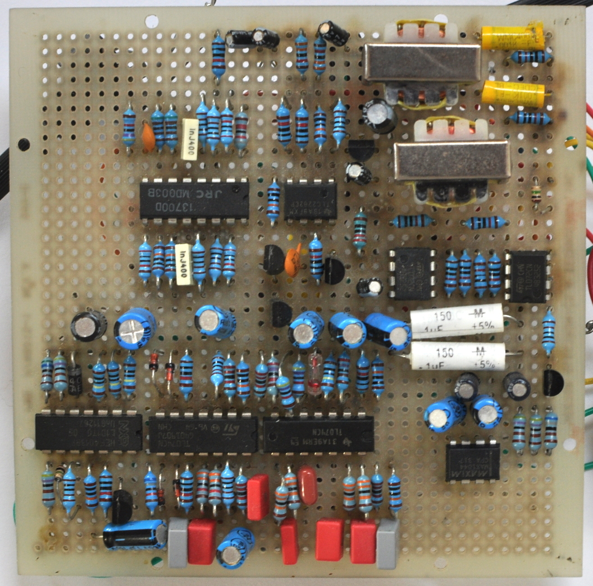

Audio Effects
The voice of Nina Simone or Ella Fitzgerald is instantly recogniseable, as is the sound of Miles Davis or of John Coltrane, but some instrumentalists cannot find their unique sound in the instrument alone. They turn to audio effects as a way to broaden their palette and to find that individuality.

Low-pass filter and high-overhead splitter
This project proposes to provide more options for musicians to find a unique sound in their artistic explorations. A number of audio effects are being built following from existing guitar effects. These will then be modified and extended. Current modules include a high-overhead splitter, a low-pass filter and a sub-octave.
Personal project
My role: direction, electronics
- Electronics